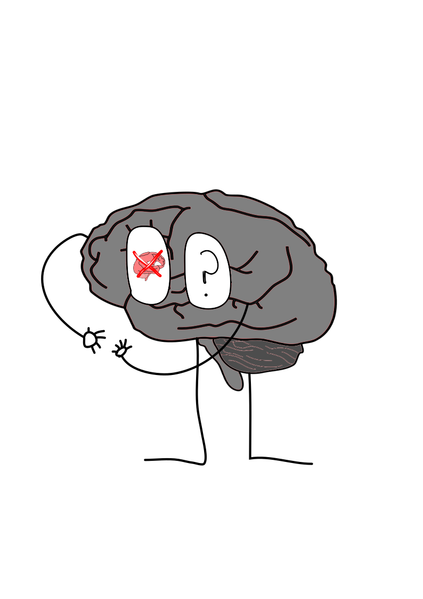

| ¿Por que son provocados o causados estos transtornos mentales? | ||
|---|---|---|
| Por que hay que saber algo es que ellos dependen de VARIOS FACTORES tanto como biologicos sociales, psicologicos que por lo cual estos ellos son alteraciones que tranforman los procesos como lo pueden ser el razonamiento, la percepcion de la realidad y tambien como sus emociones esto siendo que la mayoria de los transtornos mentales afecten la vida de una persona en diferentes aspectos de su vida. | ||
| Por lo cual aqui nosotros veremos como es causado el transtorno mental y despues como uno puedo por lo menos disminuir sus efectos y que no nos afecten en el dia a dia de nuestra vida. | ||
| Depresion | La Depresion depressio del latin, que por lo cual este es un transtorno del estado de animo el cual tiene dos clasificaciones el cual este se puede quedar durante un momento en tu o vida o sino en los peores casos es que puede durar permanentemente el cual se le describe que puede ser transitorio o permanente. que por lo cual de esta es que puede la persona llevar un caracter pesimista o de por asi decirlo en sus acciones que este aburrido o ya cansado de seguir existiendo resumiendo como este puede ser que lleve aproximadamente bastante de su tiempo en la vida cotidiana la melancolia progresiva. | Por lo cual aqui mostraremos como se puede disminuir la depresion y por lo cual este es un transtorno mental no tan facil de llevar a cabo ya que este se trata de una enfermedad mental MULTIFACTORIAL que por lo cual afecta la neurotransmision del sistema que por lo cual de esto los tratamientos son: PSICOTERAPIO y tambien con PSICOFARMACOLOGIA. ya que la psicoterapia ayuda a tratar los problemas o afectaciones psiquicas mientras que como se dice en su nombre psicofarmacologia es que aqui hacen la trata de farmacos para aliviar las afectaciones del paciente. |
| Bipolaridad | el transtorno bipolar o tambien llamado transtorno afectivo bipolar(TAB) el cual este se trata de que la persona afectada por fluctuaciones notables en el humor, comportamiento de ella que por lo cual se trata de que no es un problema que sea pasajero que solo sea por un corto tiempo sino que puede afectar a la persona durante meses o hasta AÑOS y por lo cual lo que altera a la persona este transtorno es su estado de animo que puede estar feliz durante un momento y que despues este triste o enojada al siguiente momento | Ahora vamos a como poder tratar este transtorno es que hay que saber que tipo de nivel tiene la persona ya que este cuenta con niveles como transtorno bipolar tipo 1 y 2 que por lo cual este puede ser molesto de tratar ya que no necesita de tratar con medicamentos o farmacos sino que ahora con lo que tenemos ir con PSIQUIATRIA y PSICOLOGIA CLINICA ya que la psiquiatria trata al paciente asegurar su autonomia y la adaptacion de este al enterno mientras que la psicologia clinica que es para tratar a la salud mental de este. |
| Transtorno por deficit de atencion(TDAH) | Como vemos el TDAH o transtorno por deficit de atencion es que un transtorno del neuro-desarrollo que por lo cual principalment afecta a los infantes pero este suele persistir en la edad adulta de que la persona puede tener actitudes como impulsivas que puede ser en el ambito calmado o sino que tambien en la hiperactividad que puede est llevar a la inquietud que por lo cual causa periodos de distraccion o tambien en la regulacion de la atencion hacia lo que se esta haciendo o por lo que en esta persona debe mantenerse concentrada. | Y por lo cual para poder tratar este transtorno mental es que primero hay que saber, ¿en que area de la vida afecta? ya que el TDAH puede ser beneficioso por que te puede dar el HIPERFOCO que es obtener aun mas mayor concentracion y atencion hacia lo que se esta haciendo pero si este afecta negativamente a la persona que puede ser en la Hiperactividad de no poder tan solo un momento mantenerse tranquila o concentrada este transtorno necesita ser tratado con PSIQUIATRIA para asi poder contener la concentracion. |
 |
 |
 |